Harga bahan
Harga jual tetap. Kok sisa uang mengecil?
Biaya resep bisa berubah diam-diam.
 01 / 05
01 / 05Biaya resep bisa berubah diam-diam.
02 / 05Menu sama. Porsi sama. Harga jual sama. Tapi nota belanja sudah beda.
03 / 05Cek biaya per porsi dari pembelian terbaru. Selisih kecil ikut membesar kalau produknya sering terjual.
04 / 05Cek nota belanja terbaru
Hitung ulang biaya per porsi
Evaluasi harga dan ukuran menu
Pilih yang sesuai dengan kondisi tokomu.
05 / 05Catat pembelian dan tinjau HPP di Loka Kasir agar perubahan biaya punya jejak.
Mulai dari menu terlaris.
 01 / 06
01 / 06Persennya kecil. Dampaknya belum tentu.
02 / 06Harga jual Rp20.000. Biaya produk Rp12.000. Berapa sisa setelah diskon?
03 / 06Sisa harga jual dikurangi biaya produk, sebelum biaya lain. Contoh ini tidak menunjukkan laba bersih.
04 / 06Harga setelah diskon Rp16.000, dikurangi biaya produk Rp12.000. Sisa ini masih perlu menutup biaya lain.
05 / 06Bandingkan hasil sebelum promo
Hitung margin setelah diskon
Catat produk yang dibeli lagi
Pilih yang sesuai dengan kondisi tokomu.
06 / 06Gunakan laporan penjualan Loka Kasir sebagai bahan evaluasi promo berikutnya.
Sebelum bikin promo lagi.
 01 / 04
01 / 04Belanja bahan jangan pakai satu tebakan.
02 / 04Lihat penjualan saat cuaca serupa, pesanan yang sudah masuk, dan ruang penyimpanan.
Pantau prakiraan daerahmu
Cek penjualan beberapa hari
Belanja bertahap untuk bahan segar
03 / 04Belanja bisa ditambah bertahap. Bahan yang terlanjur rusak lebih susah dikembalikan jadi uang.
04 / 04Cek stok dan riwayat penjualan di Loka Kasir sebelum membuat daftar belanja.
Cek sebelum pesan ke pemasok.
01 / 05Cerita pesanan kecil yang gampang lolos.
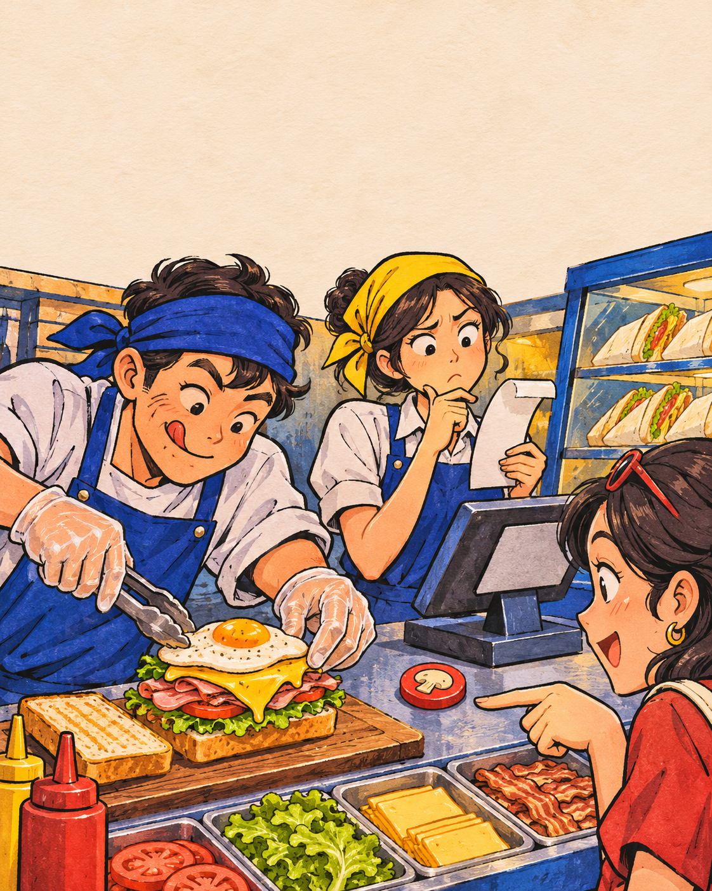
02 / 05Tambah telur sama keju, ya.
Siap, Kak.
telur saja.
Ilustrasi percakapan sehari-hari.
03 / 05Pesanan sudah lengkap. Yang dibayar belum. Ulangi pilihan tambahan sebelum menyebut total.
04 / 05Buat pilihan ekstra yang jelas
Sebutkan ulang pesanan
Periksa tambahan di struk
Pilih yang sesuai dengan kondisi tokomu.
05 / 05Grup ekstra Loka Kasir membantu mencatat pilihan tambahan beserta harganya.
Bikin ekstra ikut terbaca.
01 / 05Karena selisih uang nggak lihat ukuran toko.
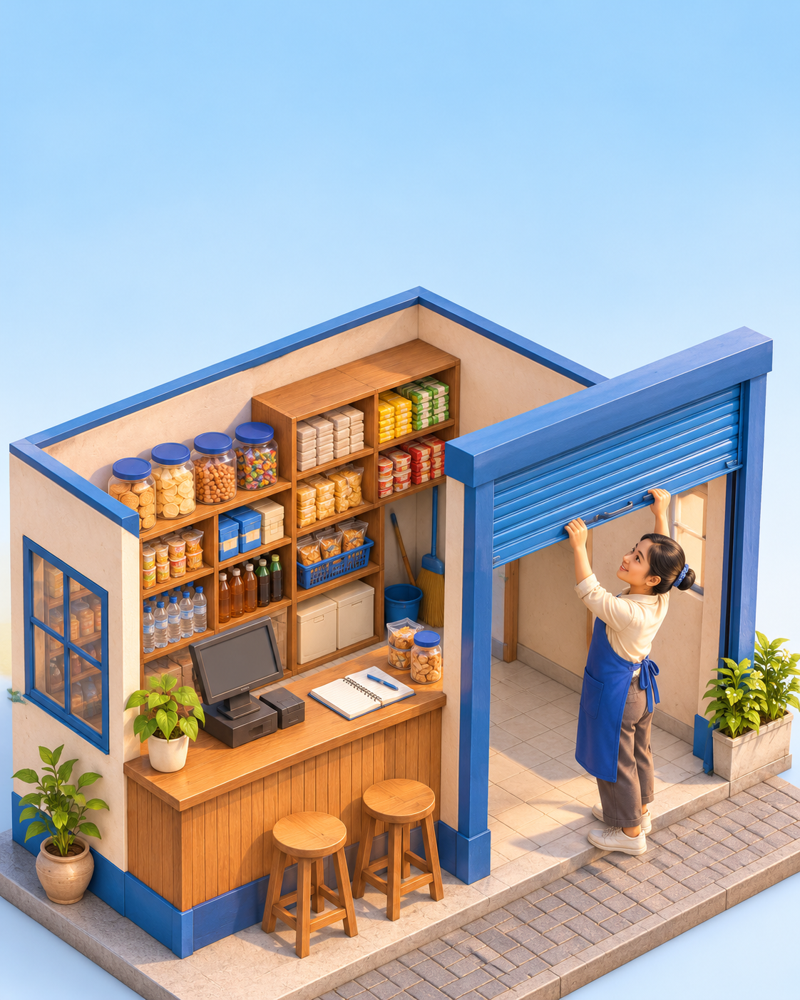
02 / 05Mengandalkan ingatan: uang di laci terasa cukup.
Punya catatan: tahu penjualan, kas keluar, dan selisihnya.
03 / 05Mulai dari transaksi hari ini. Catatan sederhana yang rutin lebih berguna daripada format rumit yang kosong.
04 / 05Masukkan transaksi saat terjadi
Catat belanja stok
Baca hasil jualan tiap malam
Pilih yang sesuai dengan kondisi tokomu.
05 / 05Kasir, stok, dan laporan Loka Kasir membantu menjalankan kebiasaan itu dalam satu aplikasi.
Rapikan dari transaksi berikutnya.
01 / 05Pilih dulu. Geser buat cek alasannya.
 02 / 0503 / 05
02 / 0503 / 05Sewa, porsi, biaya bahan, dan kapasitas bisa berbeda. Promo yang cocok di sebelah belum tentu cocok di kasmu.
04 / 05Kenali biaya produkmu
Tentukan batas potongan
Uji promo dalam jumlah kecil
Pilih yang sesuai dengan kondisi tokomu.
05 / 05Lihat data penjualan dan HPP di Loka Kasir untuk menilai pilihan promomu.
Kalau mau ikut promo.
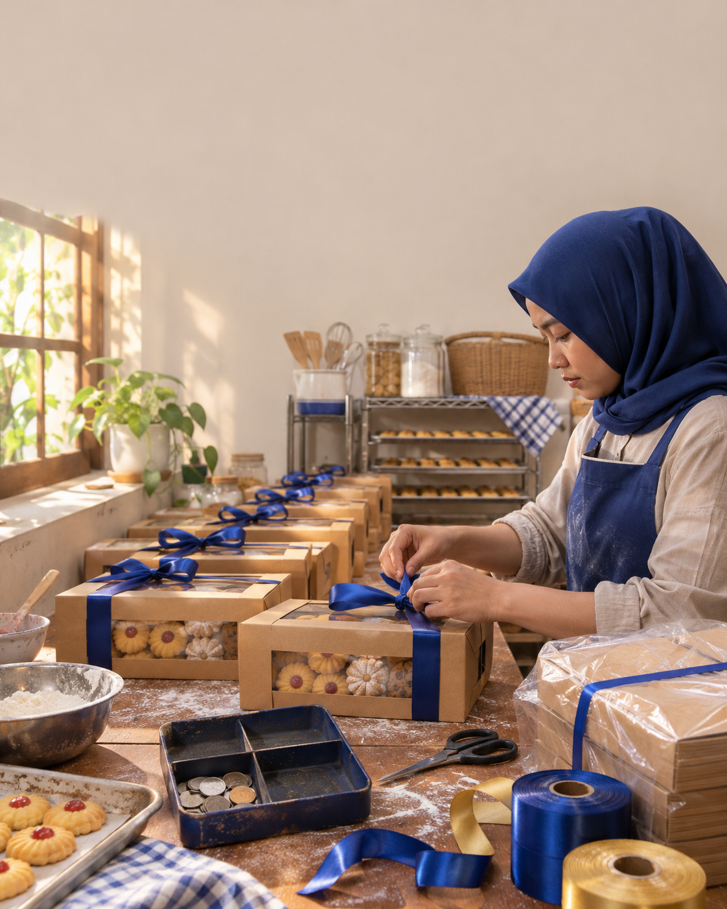
01 / 05Order besar datang sebelum uangnya lengkap.
02 / 05Siang: beli bahan, kotak, pita. Sore: uang belanja toko ikut terpakai. Pembayaran pesanan belum selesai.
03 / 05Tulis biaya yang keluar sebelum barang diserahkan. Tentukan kesepakatan pembayaran sejak awal dengan pemesan.
04 / 05Hitung kebutuhan tiap paket
Tentukan kapasitas per hari
Pisahkan catatan pesanan dan pelunasan
Pilih yang sesuai dengan kondisi tokomu.
05 / 05Gunakan produk pre-order Loka Kasir untuk mencatat pesanan yang pemenuhannya menyusul.
Sebelum bilang “siap, Kak”.
01 / 05Ulangi sebelum menagih.
 02 / 05
02 / 05Dua kopi, satu tanpa gula, satu tambah susu. Betul, Kak?
Yang tanpa gula untuk dibawa, ya.
Ilustrasi percakapan sehari-hari.
03 / 05Menu, ekstra, bungkus atau makan di tempat, lalu total. Ringkas, tapi cukup untuk menangkap detail yang terlewat.
04 / 05Baca ulang isi pesanan
Konfirmasi cara pembayaran
Serahkan struk yang sesuai
Pilih yang sesuai dengan kondisi tokomu.
05 / 05Keranjang dan struk Loka Kasir membantu kasir mengecek detail transaksi.
Coba saat antrean berikutnya.
01 / 05Potongan pemasok belum tentu menghemat kas.
02 / 05Uang keluar hari ini. Barangnya belum tentu terjual minggu ini.
03 / 05Bandingkan penghematan harga dengan kecepatan jual, masa simpan, dan kebutuhan belanja lain.
04 / 05Cek laju penjualan produk
Periksa ruang dan umur simpan
Beli sesuai kebutuhan dekat
Pilih yang sesuai dengan kondisi tokomu.
05 / 05Laporan produk dan catatan stok Loka Kasir membantu menyiapkan belanja yang lebih masuk akal.
Sebelum tergoda harga per dus.
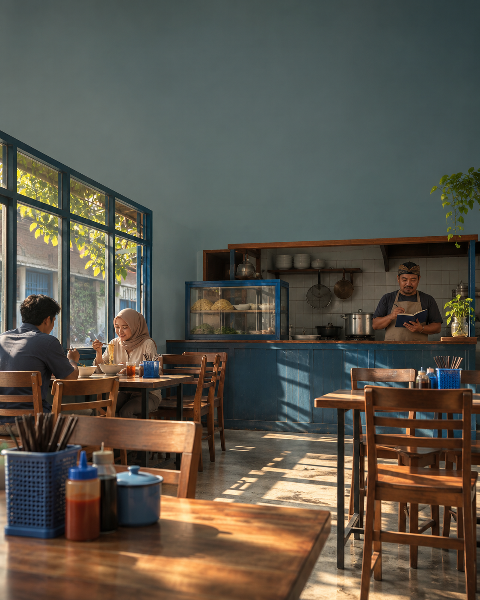
01 / 05Satu hari belum cukup untuk membaca pola.
02 / 0503 / 05Bandingkan hari yang sama, jam buka, serta produk yang dibeli. Bisa jadi pelanggan datang di jam yang berbeda.
04 / 05Bandingkan beberapa pekan
Catat perubahan jam buka
Uji satu perbaikan kecil
Pilih yang sesuai dengan kondisi tokomu.
05 / 05Riwayat transaksi Loka Kasir bisa jadi tempat mulai membaca polanya.
Buka catatan sebelum mengubah banyak hal.
01 / 05Bukti kiriman pelanggan perlu dicocokkan.
 02 / 05
02 / 05Ini screenshot-nya, Kak.
Sebentar, saya cocokkan pembayaran masuk dulu, ya.
Ilustrasi percakapan sehari-hari.
03 / 05Cocokkan nominal, penerima, dan status di layanan pembayaran toko sebelum menandai tagihan lunas.
04 / 05Cek rekening penerima
Cocokkan jumlah tagihan
Selesaikan transaksi setelah terverifikasi
Pilih yang sesuai dengan kondisi tokomu.
05 / 05Catat metode pembayaran dengan tepat di Loka Kasir agar pemeriksaan akhir hari lebih mudah.
Biar pemeriksaannya jelas.
01 / 04Serah terima perlu pegangan bersama.
 02 / 04
02 / 04Ada pesanan belum selesai? Kas keluar belum tercatat? Ada info yang harus diteruskan?
Hitung kas bersama
Catat pesanan yang masih berjalan
Sampaikan stok yang perlu perhatian
03 / 04Shift berikutnya perlu tahu apa yang belum beres dan siapa yang menanganinya, tanpa menebak ulang.
04 / 04Buka dan tutup kasir di Loka Kasir membantu menyimpan jejak kas per shift.
Isi sebelum meninggalkan kasir.
01 / 06Semua isi paket ikut mengurangi sisa.
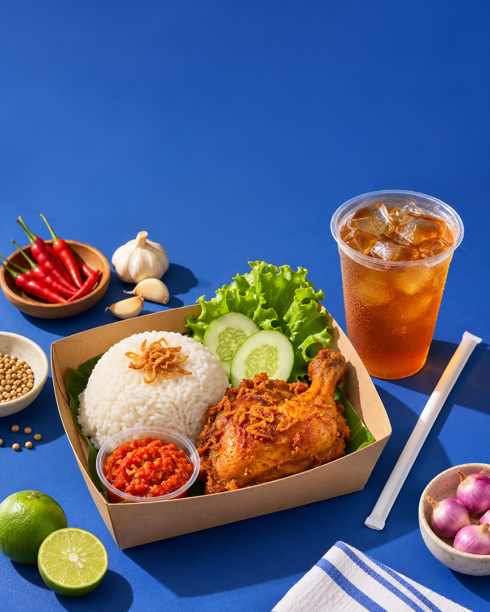
02 / 06Harga Rp12.000, biaya makanan Rp8.000. Tersisa Rp4.000 sebelum biaya lain.
03 / 06Simulasi biaya paket. Sisa ini masih perlu menutup biaya usaha lainnya.
04 / 06Simulasi: biaya minum Rp2.000 membuat biaya paket Rp10.000. Sisa per paket menjadi Rp2.000 sebelum biaya lain.
05 / 06Hitung semua isi paket
Batasi pilihan yang ditawarkan
Evaluasi selisih setelah promo
Pilih yang sesuai dengan kondisi tokomu.
06 / 06Catat penjualan paket di Loka Kasir untuk melihat apakah produknya benar-benar dipilih.
Hitung seluruh isi paket.
01 / 05Kesalahan yang sama bisa datang dari arah berbeda.
02 / 05Besok langsung belanja dua kali lipat. Ternyata pesanan kemarin hanya acara sekali.
03 / 05Tandai pesanan khusus dan bandingkan beberapa hari yang relevan sebelum menentukan belanja rutin.
04 / 05Pilih satu kesalahan berulang
Baca transaksi yang terkait
Ubah satu cara kerja besok
Pilih yang sesuai dengan kondisi tokomu.
05 / 05Simpan jejak penjualan dan stok di Loka Kasir agar evaluasi punya pegangan.
Biar pengalaman jadi pegangan.
01 / 04Siapkan alur sebelum pelanggan berdiri di depanmu.
02 / 04Dukungan pembayaran bisa berbeda menurut penyedia dan negara asal pelanggan. Pastikan dari penyedia tokomu.
Tampilkan metode yang tersedia
Pastikan nama penerima benar
Periksa dana sebelum lunas
03 / 04Tahu pilihan yang tersedia, cara mengecek pembayaran, dan alternatifnya membantu kasir menjelaskan dengan tenang.
04 / 04Loka Kasir membantu mencatat metode pembayaran; dukungan lintas negara mengikuti penyedia pembayaranmu.
Latih sebelum jam ramai.
 01 / 05
01 / 05Harga per kanal perlu hitungan sendiri.
02 / 05Datang langsung: biaya produk dan layanan toko.
Pesanan online: cek juga kemasan serta biaya kanal yang berlaku.
03 / 05Angka penjualan saja belum menjelaskan hasil tiap kanal. Daftar biaya membantu menentukan harga dan promo.
04 / 05Rinci biaya tiap kanal
Hitung selisih per pesanan
Periksa hasil tiap periode
Pilih yang sesuai dengan kondisi tokomu.
05 / 05Atur harga kanal yang sesuai di Loka Kasir, lalu tinjau catatan penjualannya.
Bandingkan per kanal.
01 / 04Aturan promo perlu selesai sebelum posternya naik.
 02 / 04
02 / 04Produk mana, berlaku kapan, ada kuota atau minimum belanja? Tim dan pelanggan perlu membaca aturan yang sama.
Tulis periode dan syarat
Uji satu transaksi promo
Briefing tim sebelum buka
03 / 04Coba satu transaksi sesuai syarat dan satu di luar syarat. Pastikan tim bisa menjelaskan bedanya.
04 / 04Atur diskon dan periksa hasil transaksi percobaan di Loka Kasir.
Cek promo sebelum ditawarkan.
01 / 04Harga. Stok. Pesanan. Ada batasnya.
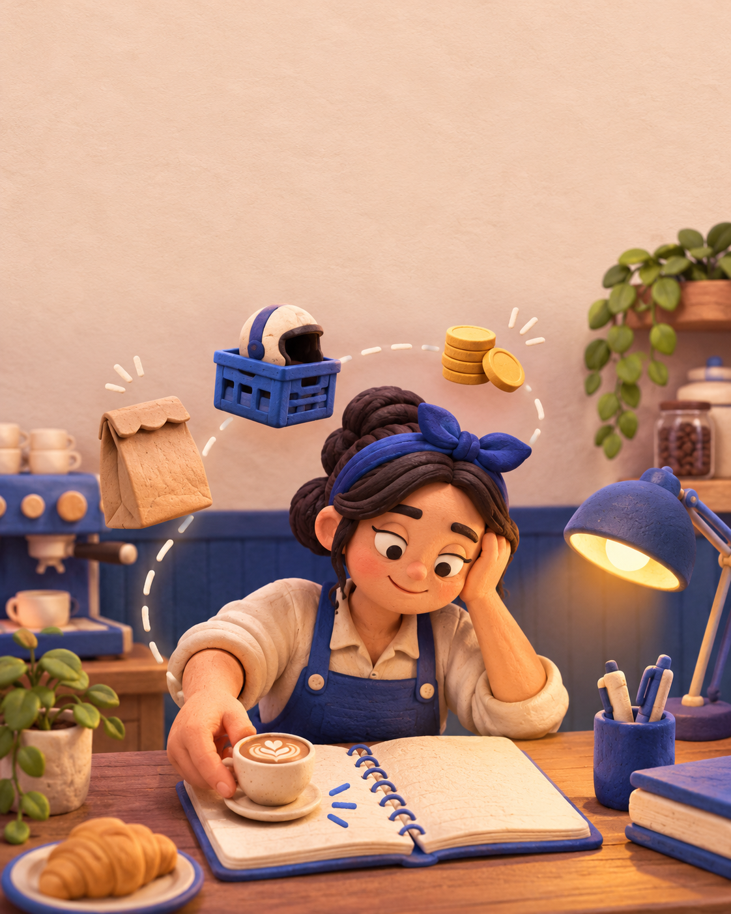
02 / 04Toko sudah tutup. Kepala masih mengulang: tadi siapa belum bayar, stok apa datang, uang keluar buat apa?
03 / 04Nggak perlu merapikan semuanya malam ini. Mulai dari hal yang paling sering bikin kamu harus mengingat ulang.
04 / 04Kirim ke teman yang mengurus toko sendirian.
01 / 05Jadwal kirim juga perlu masuk rencana.
02 / 05Pemasok sudah tutup pengiriman. Bahan utama tinggal untuk sebagian pesanan.
03 / 05Kapan batas pesan terakhir? Kapan pengiriman mulai lagi? Cocokkan dengan laju jual dan pesanan yang sudah pasti.
04 / 05Tanya hari kirim terakhir
Hitung kebutuhan sampai kirim berikutnya
Siapkan alternatif bahan yang sesuai
Pilih yang sesuai dengan kondisi tokomu.
05 / 05Catatan pembelian dan supplier Loka Kasir membantu menelusuri kebutuhan belanja.
Hubungi pemasok sebelum stok tipis.
01 / 05Pengalaman setelah klik “beli” ikut menentukan.
02 / 05Harga murah, tapi pesanan salah dan keluhan menggantung.
Harga jelas, pesanan tepat, masalah ditangani.
03 / 05Periksa satu hal yang sering bikin pelanggan harus bertanya ulang atau menunggu tanpa kabar.
04 / 05Pastikan pesanan sesuai
Berikan struk yang jelas
Dengar masukan pelanggan
Pilih yang sesuai dengan kondisi tokomu.
05 / 05Catatan transaksi Loka Kasir membantu menelusuri belanja saat ada pertanyaan.
Perbaiki pengalaman hari ini.
01 / 05Rasa suka perlu ditemani catatan.
 02 / 0503 / 05
02 / 0503 / 05Produk yang jarang terjual bisa menyita bahan serta waktu. Nilai perannya sebelum menambah stok atau menghapusnya.
04 / 05Urutkan produk terjual
Tinjau biaya tiap menu
Uji menu baru secukupnya
Pilih yang sesuai dengan kondisi tokomu.
05 / 05Laporan produk terlaris Loka Kasir membantu membaca pilihan pelanggan.
Pilih satu menu untuk ditinjau.
01 / 05Selisih tiga barang perlu cerita yang jelas.
 02 / 05
02 / 05Catatan: jumlah berdasarkan transaksi yang masuk.
Rak: barang yang benar-benar masih ada.
03 / 05Ada barang rusak, dipakai, atau transaksi yang belum dicatat? Cari sebab sebelum merapikan jumlah stok.
04 / 05Pilih waktu toko lebih tenang
Hitung barang dengan satuan sama
Catat alasan penyesuaian stok
Pilih yang sesuai dengan kondisi tokomu.
05 / 05Gunakan stok opname Loka Kasir untuk menyimpan hasil penghitungan.
Jadwalkan satu rak dulu.
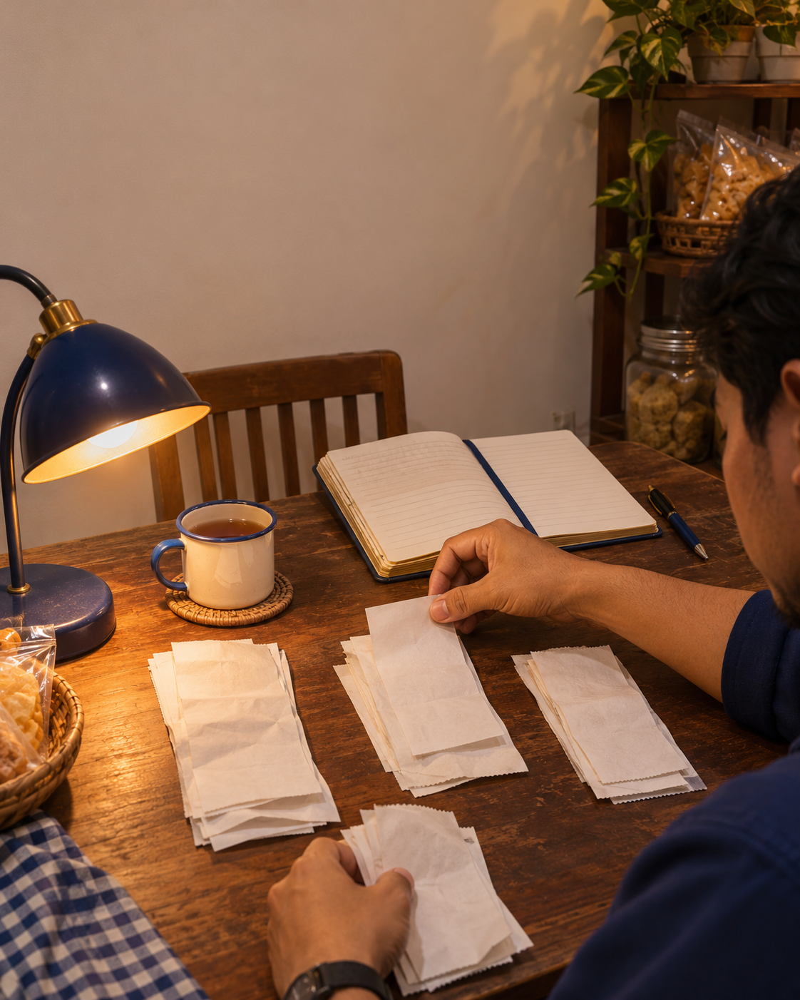
01 / 04Biar evaluasi nggak berhenti di “lumayan”.
02 / 04Apa yang paling bergerak, kapan melambat, dan biaya mana yang perlu perhatian?
Baca penjualan November
Tinjau pembelian dan biaya
Pilih satu fokus Desember
03 / 04Hasil evaluasi perlu berujung tindakan: ubah belanja, rapikan menu, atau perbaiki cara mencatat.
04 / 04Buka laporan periode November di Loka Kasir sebagai bahan evaluasi.
Bawa hasilnya ke rencana besok.
01 / 05Jangan mulai bulan baru cuma dengan target.
 02 / 05
02 / 05Tim belum tahu produk utama, belanja belum dibatasi, kapasitas belum disepakati.
03 / 05Apa yang dijual, berapa yang mampu dilayani, dan belanja mana yang didahulukan? Jawab sebelum hari ramai.
04 / 05Pilih produk yang diandalkan
Sepakati tugas tim
Cek stok awal bulan
Pilih yang sesuai dengan kondisi tokomu.
05 / 05Gunakan data penjualan dan stok Loka Kasir untuk menyusun rencana toko.
Tutup November dengan pegangan.
01 / 06Ubah angka bulanan jadi pertanyaan harian.
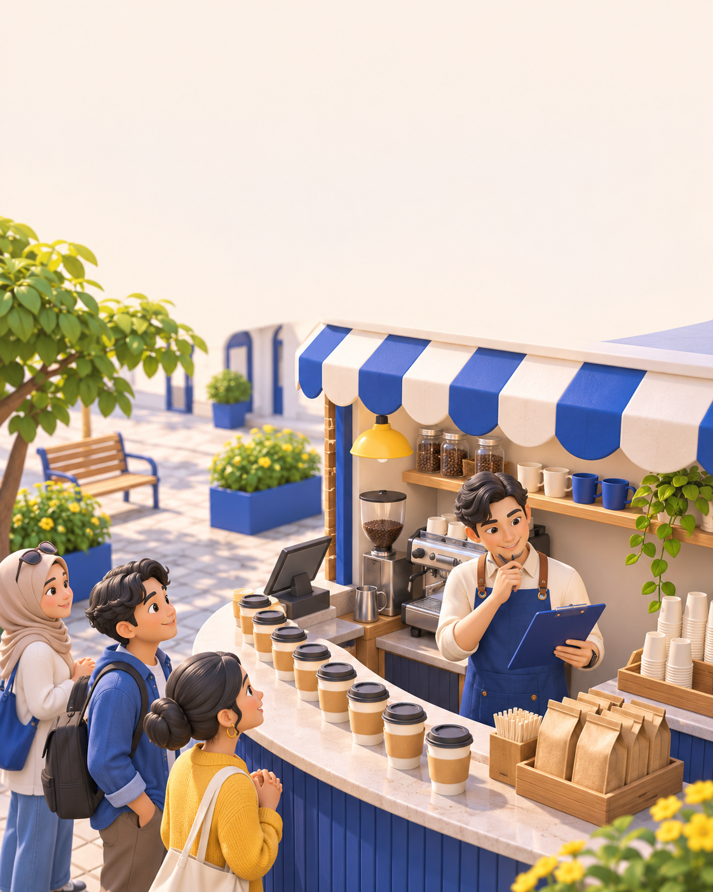
02 / 06Simulasi: target penjualan Rp600.000 per hari. Rata-rata belanja Rp30.000 per transaksi.
03 / 06Simulasi volume penjualan. Tinjau juga biaya, jam layanan, dan kapasitas tim.
04 / 06Rp600.000 dibagi Rp30.000 = 20. Ini perkiraan volume, lalu cek biaya, jam layanan, dan kapasitas tim.
05 / 06Lihat rata-rata belanja
Hitung transaksi yang dibutuhkan
Cocokkan dengan kapasitas toko
Pilih yang sesuai dengan kondisi tokomu.
06 / 06Laporan Loka Kasir membantu membaca jumlah transaksi dan nilai penjualan.
Targetnya bisa dikerjakan hari ini?
 01 / 05
01 / 05Angka besar perlu pertanyaan lanjutan.
02 / 0503 / 05Penjualan naik bisa datang bersama potongan lebih besar atau biaya bahan yang meningkat. Lihat beberapa angka bersama.
04 / 05Cek jumlah transaksi
Tinjau diskon dan biaya
Bandingkan periode setara
Pilih yang sesuai dengan kondisi tokomu.
05 / 05Gunakan laporan penjualan dan pembelian Loka Kasir untuk melihat konteksnya.
Buka laporan dengan pertanyaan.
01 / 04Uang belanja punya batas.
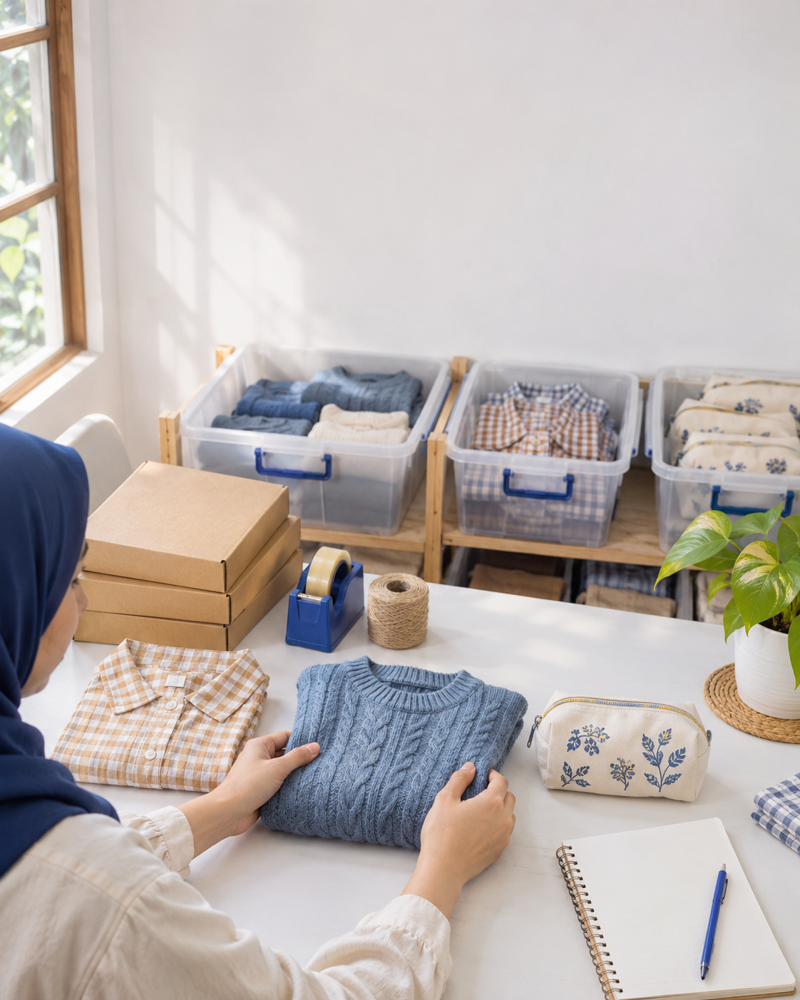
02 / 04Riwayat jual, stok yang tersedia, pesanan pasti, dan kemampuan menyimpan perlu dibaca bersama.
Pilih sedikit produk utama
Periksa stok dan laju jual
Tentukan batas belanja
03 / 04Mulai dari sedikit produk utama. Tinjau pergerakannya sebelum menyebar uang ke semua barang.
04 / 04Cek laporan produk dan stok Loka Kasir sebelum menghubungi pemasok.
Siapkan stok dengan alasan.
01 / 05Pesanan besar butuh detail yang gampang ditemukan.
 02 / 05
02 / 05Isinya campur atau sama semua?
Coba cari chat hari Selasa.
Yang sudah bayar yang mana?
Ilustrasi percakapan sehari-hari.
03 / 05Nama, isi, jumlah, waktu ambil, dan pembayaran perlu terkumpul. Periksa kembali bersama pemesan.
04 / 05Ulangi detail ke pemesan
Catat jadwal pemenuhan
Periksa pembayaran tersisa
Pilih yang sesuai dengan kondisi tokomu.
05 / 05Produk pre-order Loka Kasir membantu mencatat pesanan yang disiapkan belakangan.
Rapikan sebelum mulai produksi.
01 / 06Tulis dalam rupiah biar dampaknya kelihatan.
02 / 06Biaya produk Rp18.000. Diskon 12% berarti potongan Rp3.000.
03 / 06Sisa sebelum biaya lain. Simulasi ini tidak menunjukkan laba bersih.
04 / 06Harga setelah diskon Rp22.000, dikurangi Rp18.000 biaya produk. Sisa ini belum dikurangi biaya lain.
05 / 06Hitung harga setelah potongan
Kurangi biaya produk
Perhitungkan biaya lainnya
Pilih yang sesuai dengan kondisi tokomu.
06 / 06Cek harga dan HPP di Loka Kasir sebelum memasang promo.
Cek sebelum promo ditayangkan.
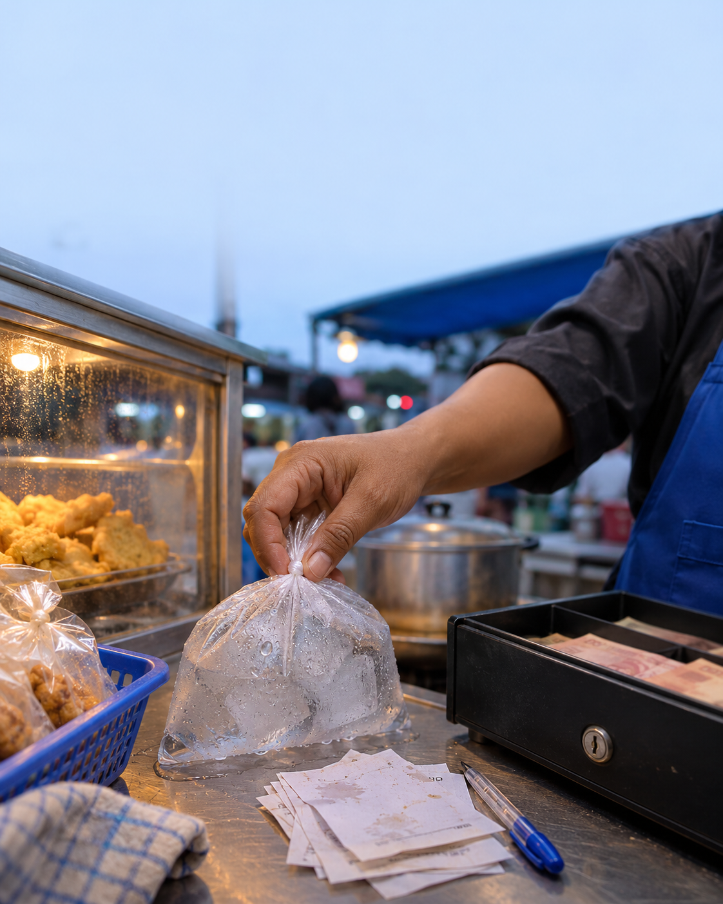
01 / 06Kas keluar kecil gampang hilang dari perhatian.
02 / 06Simulasi: pengeluaran Rp8.000 yang terjadi setiap hari selama 30 hari.
03 / 06Simulasi pengeluaran berulang. Gunakan jumlah dan frekuensi sebenarnya dari tokomu.
04 / 06Rp8.000 × 30 = Rp240.000. Catat saat uang keluar supaya laci kas punya penjelasan saat dicocokkan.
05 / 06Catat saat uang keluar
Tulis kebutuhan yang dibayar
Simpan bukti jika ada
Pilih yang sesuai dengan kondisi tokomu.
06 / 06Catatan kas keluar Loka Kasir membantu menjelaskan perubahan uang di laci.
Mulai dari pengeluaran hari ini.
01 / 05Antrean bisa macet di perpindahan tugas.
 02 / 05
02 / 05Semua dikerjakan bergantian tanpa pembagian.
Peran dibagi sesuai jumlah orang dan kondisi toko.
03 / 05Pembagian sederhana membantu tim tahu kapan menyerahkan pekerjaan dan siapa yang mengecek pesanan.
04 / 05Tetapkan penerima pesanan
Tentukan penyiap produk
Sepakati pengecekan sebelum serah
Pilih yang sesuai dengan kondisi tokomu.
05 / 05Gunakan akun karyawan yang sesuai di Loka Kasir agar akses dan catatan lebih teratur.
Sepakati sebelum akhir pekan.
01 / 05Pesanan mendadak memakai kapasitas yang nyata.
02 / 05Bisa jadi sejam lagi, Kak?
Saya cek antrean dan bahan dulu. Nanti saya kabari waktu yang bisa kami penuhi.
Ilustrasi percakapan sehari-hari.
03 / 05Periksa pesanan berjalan, bahan, dan waktu packing sebelum menyepakati jadwal.
04 / 05Cek kapasitas yang tersedia
Sebutkan waktu siap realistis
Konfirmasi perubahan lebih awal
Pilih yang sesuai dengan kondisi tokomu.
05 / 05Catat pesanan di Loka Kasir agar tim punya rujukan transaksi yang sama.
Beri waktu yang bisa dipegang.
01 / 05Coba hitung sebelum bilang “masih banyak”.
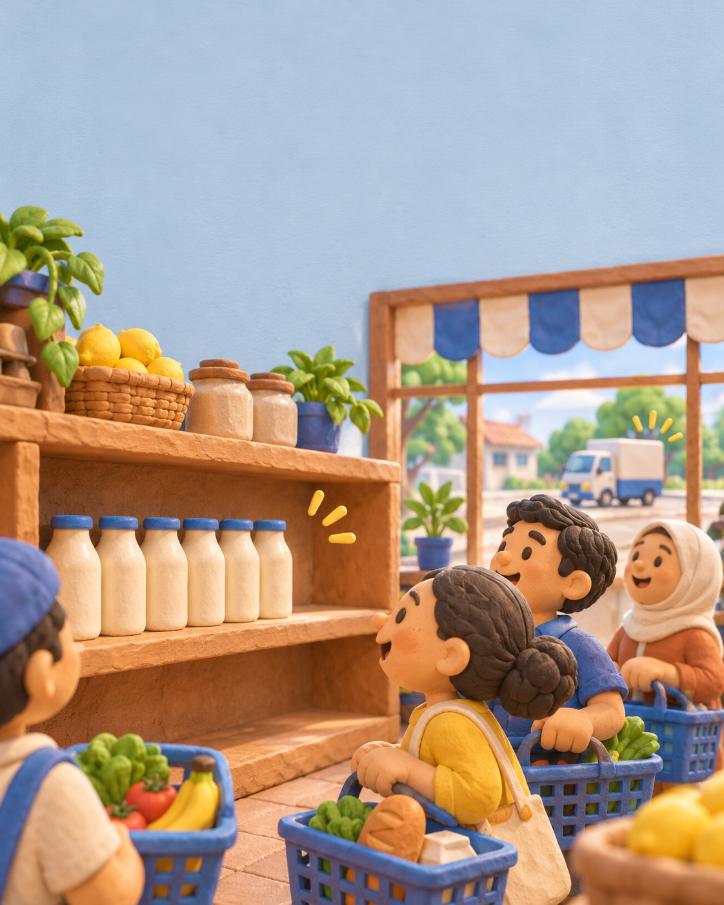
02 / 0503 / 05Dengan pola 4 per hari selama 2 hari, stok 6 kurang 2 botol. Ini simulasi; cek pola, waktu kirim, dan kondisi tokomu.
04 / 05Lihat rata-rata terjual
Tanya jadwal kirim
Tentukan stok minimum
Pilih yang sesuai dengan kondisi tokomu.
05 / 05Atur pengingat stok minimum di Loka Kasir sesuai kebutuhan produk.
Pakai angka tokomu sendiri.
01 / 05Pelanggan percaya harga yang dia lihat.
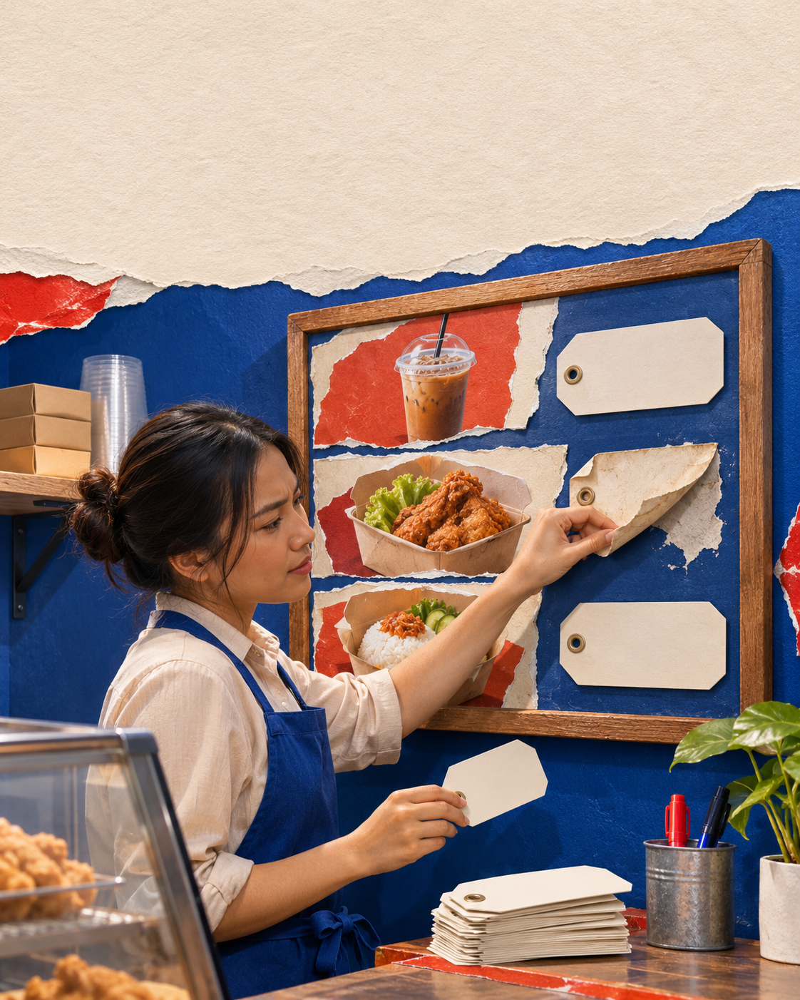
02 / 05Di poster: versi lama belum diturunkan.
Di katalog kasir: harga baru sudah dipakai.
03 / 05Perubahan harga perlu sampai ke katalog, menu, poster, dan orang yang melayani pelanggan.
04 / 05Perbarui katalog produk
Ganti informasi harga lama
Uji satu transaksi
Pilih yang sesuai dengan kondisi tokomu.
05 / 05Periksa harga produk dan struk di Loka Kasir setelah perubahan.
Keliling toko, cocokkan sekali.
01 / 06Pita dan kartu ikut dibayar dari harga jual.
 02 / 06
02 / 06Simulasi: isi produk Rp40.000. Kotak, pita, kartu, dan pelindung Rp10.000.
03 / 06Simulasi biaya paket. Periksa komponen biaya lain sebelum menentukan harga jual.
04 / 06Kalau hanya menghitung isi produk, ada Rp10.000 biaya yang belum terbaca. Cek juga biaya lain sebelum menentukan harga.
05 / 06Rinci isi dan kemasan
Catat biaya per paket
Sisakan ruang untuk biaya lain
Pilih yang sesuai dengan kondisi tokomu.
06 / 06Catat pembelian dan cek HPP produk di Loka Kasir sebagai bahan menentukan harga.
Hitung satu paket sampai lengkap.
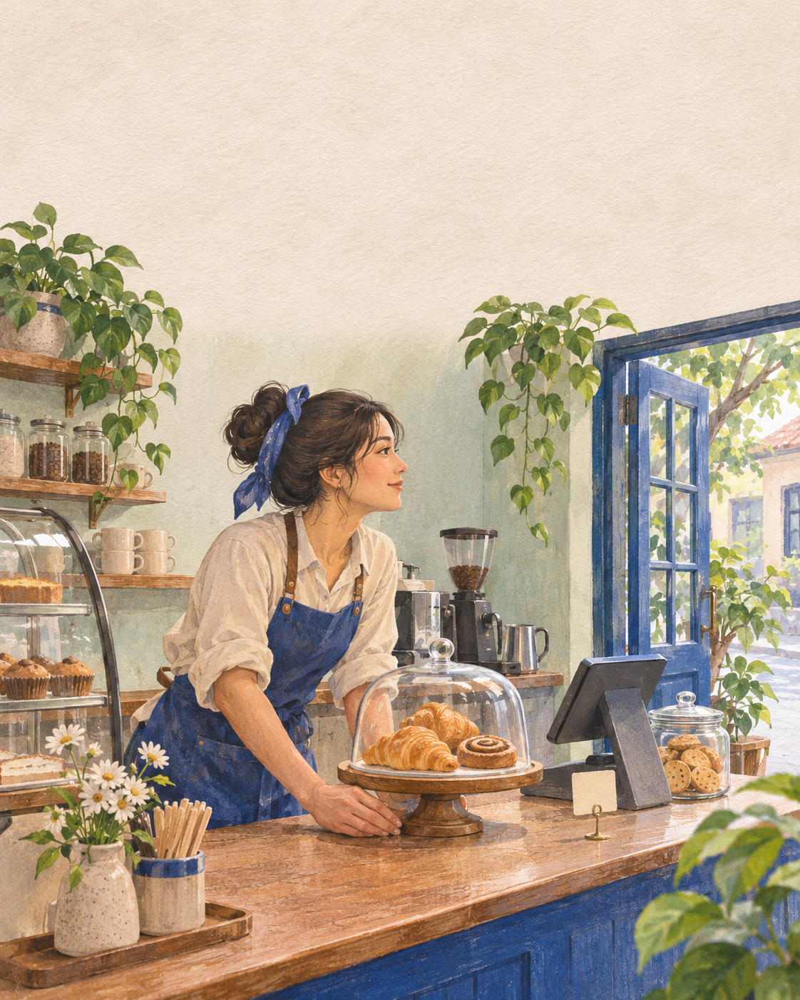
01 / 05Nanti susah tahu perubahan mana yang bekerja.
02 / 0503 / 05Tentukan satu perubahan, catat kapan dimulai, lalu bandingkan hasil pada periode yang relevan.
04 / 05Cari pola penjualan
Pilih satu perubahan
Bandingkan hasil pekan depan
Pilih yang sesuai dengan kondisi tokomu.
05 / 05Filter periode laporan Loka Kasir untuk membantu evaluasi mingguan.
Buat percobaan yang bisa dibaca.
01 / 05Detail yang hilang bisa pindah jadi chat bolak-balik.
02 / 05Foto bagus, tapi ukuran dan ekstra tidak jelas.
Foto jelas, pilihan lengkap, harga terbaca.
03 / 05Cek nama, ukuran, pilihan rasa atau gula, ekstra, dan ketersediaan sesuai yang benar-benar dijual.
04 / 05Rapikan nama produk
Jelaskan varian yang tersedia
Cek harga tambahannya
Pilih yang sesuai dengan kondisi tokomu.
05 / 05Atur varian dan grup ekstra di Loka Kasir sesuai pilihan yang dijual.
Buka menumu seperti pelanggan baru.
01 / 05Detail kecil perlu ikut sampai meja.
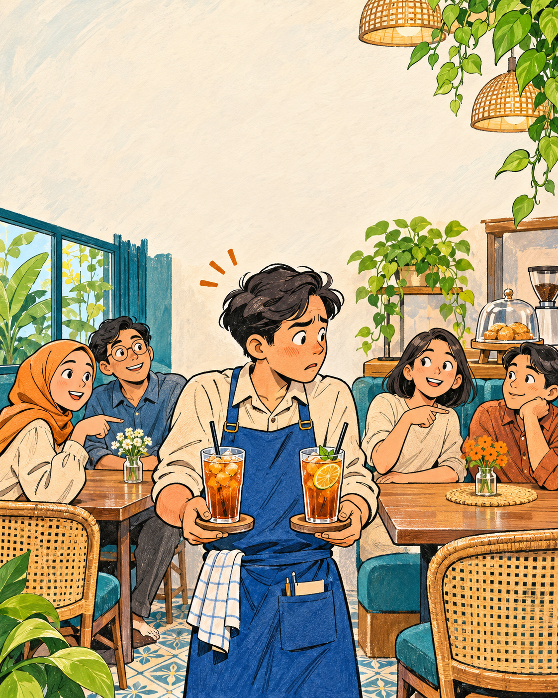
02 / 05Es tehnya, Kak.
Ini tanpa gula, kan?
Sebentar, saya cek pesanan mejanya.
Ilustrasi percakapan sehari-hari.
03 / 05Cocokkan meja, produk, dan catatan sebelum mengantar. Nama menu saja belum cukup untuk membedakan pesanan.
04 / 05Pastikan nomor meja benar
Periksa detail pesanan
Cocokkan sebelum diantar
Pilih yang sesuai dengan kondisi tokomu.
05 / 05Denah meja dan pesanan meja Loka Kasir membantu tim mengikuti alurnya.
Biar pesanan sampai dengan tepat.
01 / 05Harga murah nggak menghentikan umur simpan.
 02 / 05
02 / 05Susu, sayur, dan bahan segar tetap berubah kondisinya saat menunggu pembeli.
03 / 05Mulai dari laju jual, masa simpan, serta kemampuan menyimpan sesuai kebutuhan bahan.
04 / 05Cek kondisi bahan harian
Lihat pemakaian dan penjualan
Belanja bertahap sesuai kebutuhan
Pilih yang sesuai dengan kondisi tokomu.
05 / 05Catatan stok dan pembelian Loka Kasir membantu membaca pergerakan bahan.
Cek stok sebelum belanja lagi.
01 / 04“Sudah paham” perlu dicoba lewat transaksi.
02 / 04Coba pilih produk, ubah ekstra, pakai diskon yang sesuai, lalu selesaikan pembayaran.
Tunjukkan satu transaksi
Coba beberapa metode bayar
Jelaskan siapa yang dihubungi
03 / 04Minta tim menjelaskan langkahnya. Bagian yang terlewat lebih mudah dibenahi sebelum antrean terbentuk.
04 / 04Gunakan akun karyawan Loka Kasir sesuai perannya saat latihan dan bekerja.
Sisihkan waktu latihan singkat.
01 / 04Coba tanya tanpa melihat poster.
 02 / 04
02 / 04Berlaku kapan, produk apa, minimum belanja berapa, dan bagaimana kalau syaratnya belum terpenuhi?
Tetapkan produk dan kuota
Tulis periode promo
Coba transaksi sebelum tayang
03 / 04Kalau penjelasan tim masih berbeda, rapikan aturannya sebelum pelanggan menagih janji promo.
04 / 04Periksa pengaturan diskon dan struk Loka Kasir agar penagihan sesuai penawaran.
Cek pemahaman sebelum mulai.
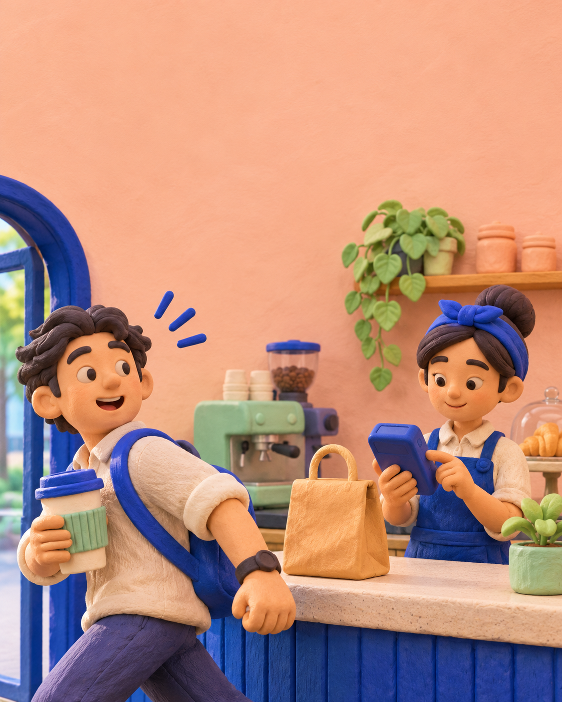
01 / 05Beri tahu apa yang sedang dicek.
02 / 05Sebentar ya, Kak. Saya cocokkan nominal dan statusnya supaya tagihannya selesai dengan benar.
Oke, Kak.
Ilustrasi percakapan sehari-hari.
03 / 05Pelanggan tahu alasan menunggu. Tim tetap punya waktu mencocokkan pembayaran dari sisi toko.
04 / 05Sebutkan total tagihan
Periksa pembayaran masuk
Berikan bukti transaksi
Pilih yang sesuai dengan kondisi tokomu.
05 / 05Pilih metode bayar yang benar dan simpan transaksi di Loka Kasir.
Latih kalimatnya bersama tim.
01 / 05Janji di etalase perlu mengikuti stok.
02 / 05Etalase: produk promo masih ditawarkan.
Di rak: produk sudah habis sejak siang.
03 / 05Tandai ketersediaan dan sampaikan pilihan pengganti dengan harga yang jelas sebelum pelanggan membayar.
04 / 05Cek stok sebelum buka
Pantau produk yang menipis
Beritahu saat produk habis
Pilih yang sesuai dengan kondisi tokomu.
05 / 05Gunakan catatan stok Loka Kasir untuk membantu tim memeriksa ketersediaan.
Cek produk promo sepanjang hari.
01 / 05Masih ada stok, biaya, dan pesanan yang perlu dibayar.
 02 / 05
02 / 05Di dalamnya bisa ada dana untuk belanja besok dan kebutuhan usaha yang belum dibayar.
03 / 05Pisahkan kebutuhan pribadi dan usaha. Catat uang yang diambil supaya pergerakan kas bisa ditelusuri.
04 / 05Tentukan kebutuhan dekat
Catat setiap kas keluar
Pisahkan ambilan pribadi
Pilih yang sesuai dengan kondisi tokomu.
05 / 05Pakai catatan kas Loka Kasir agar perubahan uang lebih mudah ditelusuri.
Beri nama pada setiap uang keluar.
01 / 05Coba alurnya sebelum antrean datang.
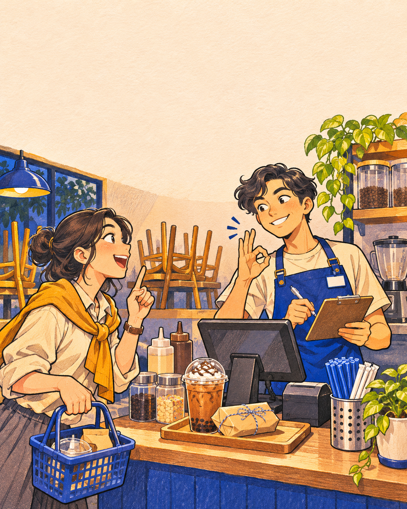
02 / 05Dua produk, satu ekstra, satu diskon. Ada pilihan bungkus dan metode pembayaran berbeda.
03 / 05Lihat di mana tim harus bertanya ulang, harga belum cocok, atau perlengkapan kurang. Rapikan malam ini.
04 / 05Cek harga dan pilihan
Latih alur pembayaran
Pastikan printer siap
Pilih yang sesuai dengan kondisi tokomu.
05 / 05Uji alur kerja kasir Loka Kasir bersama tim sebelum toko buka.
Satu simulasi sebelum tutup.
01 / 05Dua catatan bisa membuat satu slot terjual dua kali.
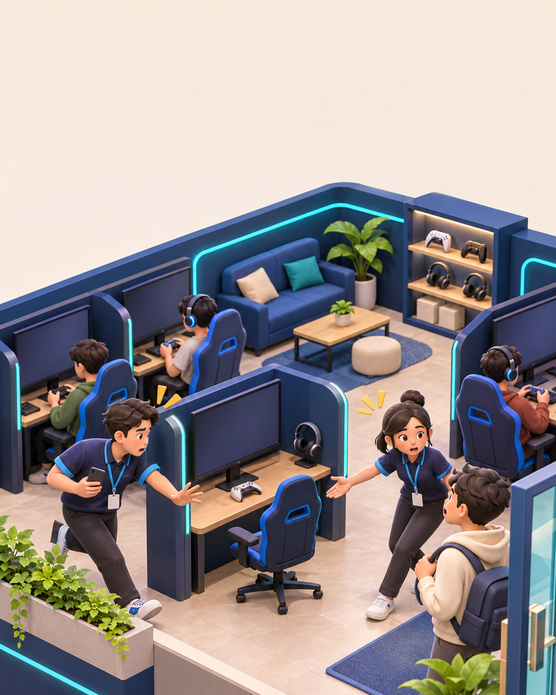
02 / 05Dari chat: owner menerima pesanan.
Datang langsung: petugas menerima slot yang sama.
03 / 05Periksa tanggal, jam, durasi, dan unit atau layanan sebelum mengonfirmasi reservasi.
04 / 05Cek tanggal dan jam
Konfirmasi durasi
Perbarui catatan pemesanan
Pilih yang sesuai dengan kondisi tokomu.
05 / 05Fitur booking lapangan Loka Kasir membantu merapikan jadwal reservasi.
Sepakati tempat mencatatnya.
01 / 04Sempatkan cek transaksi saat promo berjalan.
02 / 04Apakah produk dan syarat sudah tepat? Ada diskon yang diterapkan keliru? Stok promonya masih ada?
Cek transaksi promo pertama
Pantau sisa produk
Catat koreksi dengan jelas
03 / 04Catat pola kesalahan dan sampaikan perbaikannya ke tim supaya transaksi berikutnya lebih rapi.
04 / 04Periksa diskon dan transaksi di Loka Kasir saat pergantian shift.
Pantau di sela jam ramai.
 01 / 05
01 / 05Detail hari ini paling mudah diingat hari ini.
02 / 05Kas belum dicocokkan. Pembayaran non-tunai belum dicek. Besok detailnya bisa lebih susah dicari.
03 / 05Hitung uang, cocokkan catatan, lalu tulis selisih dan hal yang perlu ditelusuri. Nggak harus selesai ditebak malam ini.
04 / 05Hitung kas fisik
Cocokkan penerimaan non-tunai
Tulis penyebab selisih yang diketahui
Pilih yang sesuai dengan kondisi tokomu.
05 / 05Tutup kasir Loka Kasir membantu membandingkan kas tercatat dan uang yang dihitung.
Beri shift besok pegangan.
01 / 05Penjualan khusus perlu pembanding hari biasa.
02 / 0503 / 05Promo bisa mengubah pola beli sementara. Bandingkan sebelum mengunci uang dalam stok tambahan.
04 / 05Pisahkan periode promo
Lihat stok tersisa
Restok sesuai kebutuhan berikutnya
Pilih yang sesuai dengan kondisi tokomu.
05 / 05Filter laporan penjualan Loka Kasir untuk membandingkan periode yang relevan.
Belanja setelah membaca sisa.
01 / 04Coba cek informasi yang cuma ada di kepalamu.
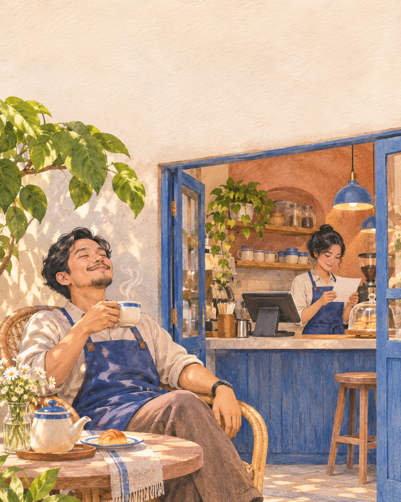
02 / 04Tim perlu tahu harga terbaru, pesanan berjalan, dan barang yang tersedia. Apakah mereka bisa menemukannya sendiri?
03 / 04Tuliskan satu hal yang paling sering ditanyakan. Bagikan ke orang yang perlu mengaksesnya.
04 / 04Apa yang paling sering ditanya saat kamu sedang libur?
01 / 04Lebih ringan dicek sebelum pita terakhir diikat.
 02 / 04
02 / 04Nama, jumlah, isi, waktu ambil, dan pembayaran. Cocokkan dengan catatan yang disepakati.
Konfirmasi isi ke pemesan
Kelompokkan waktu ambil
Cocokkan jumlah sebelum serah
03 / 04Dua paket berukuran sama bisa punya isi berbeda. Beri penanda yang membantu saat serah terima.
04 / 04Buka catatan produk pre-order Loka Kasir saat mengecek pesanan.
Cek sebelum packing ditutup.
01 / 05Hitungan lama bisa tertinggal tanpa terasa.
 02 / 05
02 / 05Nota sebelumnya: biaya yang dipakai saat menentukan harga.
Nota terbaru: biaya yang benar-benar keluar sekarang.
03 / 05Mulai dari bahan yang berubah dan menu yang sering terjual. Lihat dampaknya per porsi.
04 / 05Cek harga beli terbaru
Tinjau biaya tiap produk
Hitung ulang ruang diskon
Pilih yang sesuai dengan kondisi tokomu.
05 / 05Riwayat pembelian dan HPP Loka Kasir membantu meninjau perubahan biaya.
Buka nota terbaru hari ini.
01 / 04Mulai dari barang yang paling perlu perhatian.
 02 / 04
02 / 04Barang bernilai tinggi, cepat bergerak, atau sering selisih bisa diperiksa lebih dahulu.
Pilih kelompok produk
Hitung dengan satuan konsisten
Telusuri selisih sebelum koreksi
03 / 04Tentukan area dan waktu hitung. Pastikan pergerakan barang selama pemeriksaan ikut dicatat.
04 / 04Gunakan stok opname Loka Kasir untuk mencatat hasil penghitungan fisik.
Pilih satu rak untuk mulai.
01 / 05Masih ada hak pelanggan yang perlu dilayani.
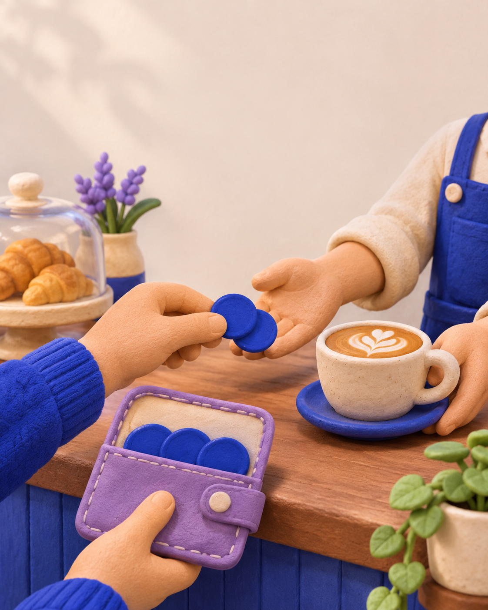
02 / 05Saldo yang belum dipakai berbeda dari transaksi produk yang sudah selesai.
03 / 05Cocokkan riwayat pengisian, penggunaan, dan sisa hak pelanggan sebelum membaca hasil penjualan.
04 / 05Catat top-up dengan tepat
Periksa penggunaan saldo
Cocokkan sisa saldo pelanggan
Pilih yang sesuai dengan kondisi tokomu.
05 / 05Fitur saldo pelanggan Loka Kasir membantu mencatat top-up dan penggunaannya.
Pisahkan pertanyaannya saat mengecek.
 01 / 04
01 / 04Simpan juga alasan buat keputusan berikutnya.
02 / 04Produk yang bergerak, potongan yang diberikan, biaya yang keluar, dan kendala yang terjadi.
Bandingkan penjualan
Tinjau selisih setelah biaya
Catat satu keputusan berikutnya
03 / 04Pilih apa yang layak diulang dan apa yang perlu diubah. Tulis alasan dari catatan selama promo.
04 / 04Laporan Loka Kasir membantu menyiapkan data untuk evaluasi toko.
Bikin evaluasi jadi keputusan.
01 / 05Coba lihat barang yang masih diam.
 02 / 05
02 / 05Sebagian uang langsung dipakai menambah stok. Barang lama masih memenuhi rak. Tagihan lain mulai mendekat.
03 / 05Lihat kapan uang masuk, kapan biaya harus dibayar, dan berapa dana masih tertahan dalam barang.
04 / 05Lihat kebutuhan bayar dekat
Periksa barang lambat terjual
Batasi belanja tambahan
Pilih yang sesuai dengan kondisi tokomu.
05 / 05Catatan pembelian, stok, dan kas Loka Kasir bisa dibaca bersama untuk evaluasi.
Cek sebelum menambah belanja.
 01 / 05
01 / 05Jangan baru tahu saat bahan tinggal sedikit.
02 / 05Kapan batas pesan sebelum libur?
Pengiriman berikutnya mulai tanggal berapa?
Ilustrasi percakapan sehari-hari.
03 / 05Cocokkan jawabannya dengan pesanan pasti, laju jual, dan ruang penyimpanan. Jadwal tiap pemasok bisa berbeda.
04 / 05Hubungi pemasok utama
Catat jadwal pengiriman
Siapkan pilihan cadangan
Pilih yang sesuai dengan kondisi tokomu.
05 / 05Catatan supplier dan pembelian Loka Kasir membantu merapikan kebutuhan belanja.
Hubungi pemasok utama dulu.
01 / 05Satuan pembelian dan penjualan bisa berbeda.
 02 / 0503 / 05
02 / 0503 / 05Ini simulasi isi kemasan. Periksa jumlah sebenarnya dan satuan yang dipakai sebelum mencatat stok masuk.
04 / 05Cek isi setiap kemasan
Gunakan konversi yang benar
Cocokkan barang diterima
Pilih yang sesuai dengan kondisi tokomu.
05 / 05Atur satuan produk di Loka Kasir sesuai cara membeli dan menjualnya.
Baca satuan sebelum simpan.
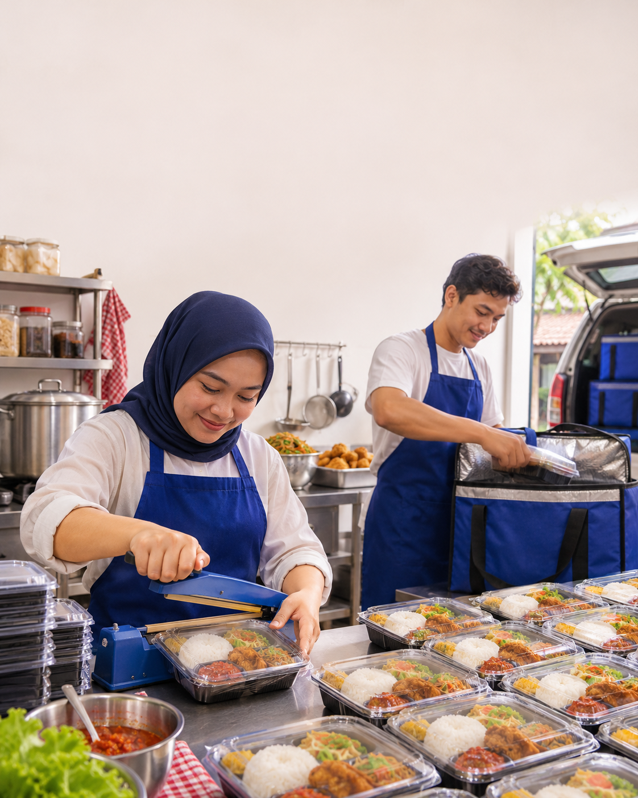
01 / 05Pesanan besar bisa membawa biaya tambahan.
02 / 05Bisa ada kemasan khusus, tambahan tenaga, dan pengantaran yang perlu disiapkan.
03 / 05Tanyakan isi, jadwal, kemasan, dan pengiriman. Susun harga dari kebutuhan pesanan yang sebenarnya.
04 / 05Pastikan spesifikasi pesanan
Hitung kebutuhan tambahan
Konfirmasi total dan waktu
Pilih yang sesuai dengan kondisi tokomu.
05 / 05Simpan detail transaksi di Loka Kasir sebagai rujukan saat menyiapkan pesanan.
Besar pesanan, jelas hitungannya.
01 / 05Waktu memilih dimulai sebelum pembayaran.
 02 / 05
02 / 05Nama kreatif, tapi ukuran dan harga sulit dicari.
Nama jelas, ukuran terlihat, harga lengkap.
03 / 05Minta orang yang belum hafal menu memilih satu pesanan. Dengarkan bagian yang masih membingungkan.
04 / 05Rapikan nama menu
Kelompokkan pilihan
Jelaskan harga tambahan
Pilih yang sesuai dengan kondisi tokomu.
05 / 05Katalog dan grup ekstra Loka Kasir membantu kasir memasukkan pilihan sesuai pesanan.
Uji menunya ke orang baru.
01 / 05Waktu mulai dan aturan tambahan perlu disepakati.
 02 / 05
02 / 05Saya kira dihitung dari jam tadi.
Di catatan mulai lebih awal.
Jadi tambahnya berapa?
Ilustrasi percakapan sehari-hari.
03 / 05Catat paket, mulai, durasi, dan ketentuan tambahan yang disepakati. Konfirmasi lagi ke pelanggan.
04 / 05Konfirmasi paket yang dipilih
Pastikan waktu mulai
Jelaskan tambahan durasi
Pilih yang sesuai dengan kondisi tokomu.
05 / 05Timer rental Loka Kasir membantu mencatat waktu penggunaan sesuai pengaturan usaha.
Biar selesai tanpa beda hitungan.
01 / 05Ruang penyimpanan juga punya kapasitas.
 02 / 0503 / 05
02 / 0503 / 05Tambahan barang perlu bisa diperiksa serta disimpan sesuai kondisinya. Harga murah belum menjawab dua hal itu.
04 / 05Lihat ruang yang tersedia
Periksa stok lama
Sesuaikan jumlah pesanan
Pilih yang sesuai dengan kondisi tokomu.
05 / 05Catatan stok Loka Kasir membantu melihat jumlah barang sebelum belanja.
Lihat ruang sebelum pesan.
01 / 04Informasi yang sama perlu sampai ke semua tempat.
02 / 04Profil usaha, pesan otomatis, pemberitahuan toko, dan tim yang membalas pelanggan.
Tetapkan jam operasional
Umumkan di kanal toko
Cek pesanan yang terdampak
03 / 04Pastikan jadwal yang sudah dijanjikan masih bisa dipenuhi. Hubungi pemesan jika ada perubahan yang perlu disepakati.
04 / 04Gunakan catatan pesanan Loka Kasir untuk meninjau transaksi yang perlu ditindaklanjuti.
Umumkan sebelum pelanggan datang.
 01 / 05
01 / 05Barang titipan perlu catatan sendiri.
02 / 05Stok milik toko: dibeli untuk dijual lagi.
Barang titipan: ada kesepakatan dengan pemiliknya.
03 / 05Catat barang masuk, terjual, tersisa, retur, dan ketentuan pembagiannya sesuai kesepakatan.
04 / 05Catat barang yang diterima
Cocokkan jumlah terjual
Periksa sisa dan perhitungan setoran
Pilih yang sesuai dengan kondisi tokomu.
05 / 05Fitur barang titipan Loka Kasir membantu mencatat konsinyasi usaha.
Cocokkan sebelum menyetor.
01 / 05Barang kecil juga bisa menghentikan layanan.
 02 / 05
02 / 05Minuman sudah jadi. Tim mencari tutup gelas yang ternyata tinggal sedikit sejak pagi.
03 / 05Gelas, tutup, kantong, dan kertas struk perlu dicek bersama produk. Jangan menunggu kotaknya terlihat kosong.
04 / 05Cek kemasan yang tersedia
Hitung kebutuhan pesanan dekat
Belanja kekurangan yang diperlukan
Pilih yang sesuai dengan kondisi tokomu.
05 / 05Catatan pembelian dan stok Loka Kasir membantu menyiapkan kebutuhan usaha.
Tambahkan ke cek sebelum buka.
01 / 05Kalau pakai QR order, alurnya perlu dicoba.
02 / 05Bisa tambah pesan dari sini?
Bisa lewat kode ini. Kalau perlu bantuan, kami bantu langsung, ya.
Ilustrasi percakapan sehari-hari.
03 / 05Pastikan kode terbaca, menu sesuai, dan tim tahu cara menangani pesanan yang masuk.
04 / 05Cek kode di setiap meja
Periksa produk dan harga
Jelaskan alur pesanan ke tim
Pilih yang sesuai dengan kondisi tokomu.
05 / 05QR order Loka Kasir membantu pelanggan memesan dari HP ke sistem kasir; koneksi internet diperlukan.
Coba dari meja sebelum buka.
01 / 0422 Desember, lihat kerja yang sering luput.
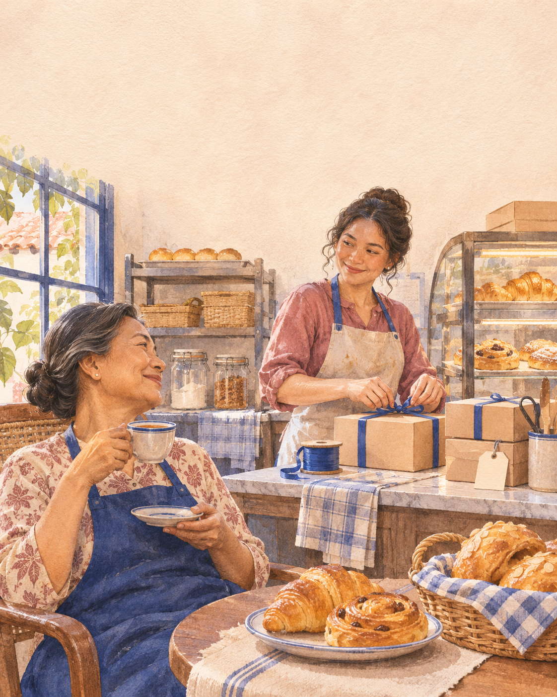
02 / 04Mungkin mencatat belanja. Mungkin packing. Mungkin jaga sebentar supaya Ibu bisa duduk tanpa dipanggil.
03 / 04Tanyakan yang dibutuhkan, lalu bantu dengan jelas. Ruang istirahat juga berarti untuk orang yang menjaga usaha setiap hari.
04 / 04Tag ibu atau sosok ibu yang usahanya kamu dukung.
01 / 05Kedekatan nggak otomatis bikin semua orang tahu.
 02 / 05
02 / 05“Jaga dulu, ya.” Harga dan cara catat belum dijelaskan.
Jelaskan harga, pembayaran, dan kas keluar sebelum berganti.
03 / 05Catatan yang bisa dibaca bersama mengurangi pertanyaan serta beda kebiasaan saat menjaga toko.
04 / 05Tunjukkan alur transaksi
Sepakati kas keluar
Cocokkan hasil saat bergantian
Pilih yang sesuai dengan kondisi tokomu.
05 / 05Akun karyawan dan catatan kas Loka Kasir membantu menjaga jejak kerja.
Sepakati sebelum menitipkan kasir.
01 / 04Cocokkan sebelum barang berpindah tangan.
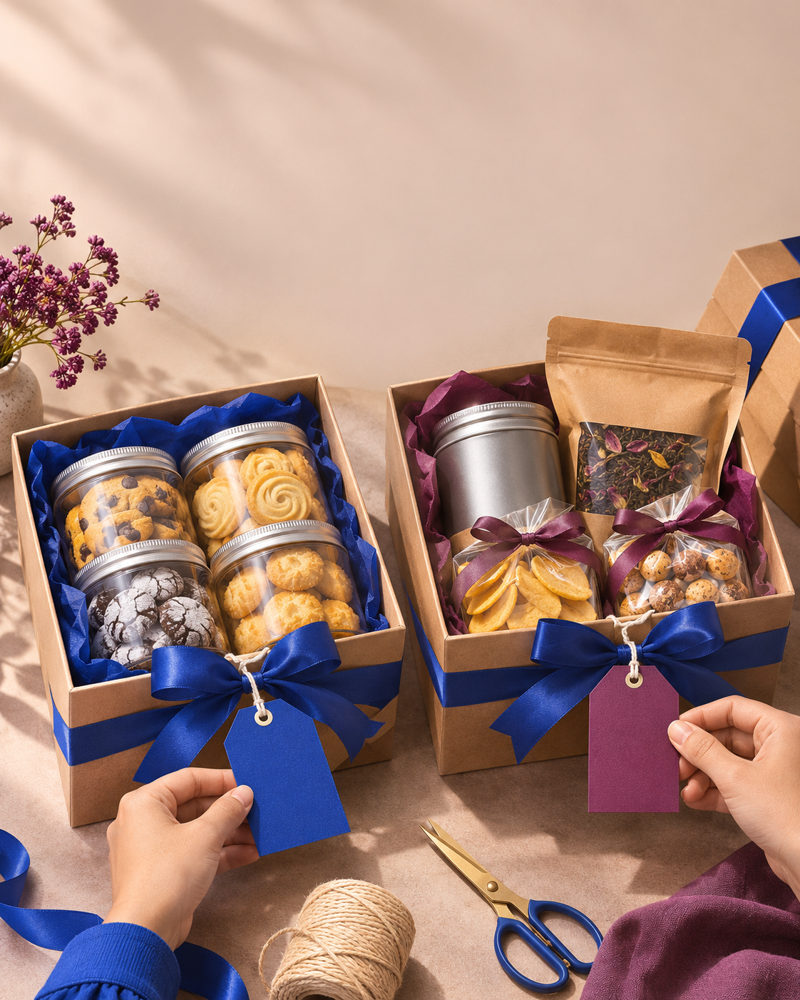
02 / 04Periksa nama, isi, jumlah, dan penanda paket bersama catatan pesanan.
Baca nama pemesan
Cocokkan isi dan jumlah
Periksa status pembayaran
03 / 04Bacakan detail singkat dan pastikan penerima membawa paket yang sesuai sebelum meninggalkan toko.
04 / 04Buka catatan pre-order Loka Kasir saat menyerahkan pesanan.
Tempel penanda yang mudah dibaca.
01 / 05Dua status yang perlu dibedakan.
 02 / 05
02 / 05Pembayaran: sudah berhasil menurut penyedia.
Dana tersedia: mengikuti proses dan jadwal penyedia.
03 / 05Baca ketentuan layanan yang dipakai tokomu, terutama menjelang perubahan hari operasional.
04 / 05Cek ketentuan penyedia
Cocokkan penerimaan
Siapkan kas operasional yang cukup
Pilih yang sesuai dengan kondisi tokomu.
05 / 05Catat metode bayar dengan tepat di Loka Kasir, lalu cocokkan dengan laporan penyedia.
Cocokkan dengan rencana belanja.
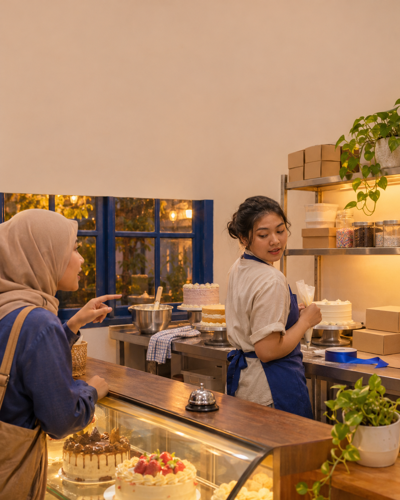
01 / 05Batas waktu makin dekat, janji tetap perlu masuk akal.
02 / 05Masih bisa untuk hari ini?
Saya cek yang sedang dikerjakan dulu, ya. Kami pastikan waktu yang bisa dipenuhi.
Ilustrasi percakapan sehari-hari.
03 / 05Periksa bahan, waktu persiapan, dan pesanan berjalan. Sampaikan pilihan yang benar-benar bisa dilayani.
04 / 05Cek detail transaksi
Pastikan kemasan sesuai
Konfirmasi waktu pengambilan
Pilih yang sesuai dengan kondisi tokomu.
05 / 05Catatan pesanan Loka Kasir membantu tim menyiapkan barang sesuai permintaan.
Konfirmasi sebelum menerima.
01 / 04Biar buka lagi nggak dimulai dari mencari-cari.
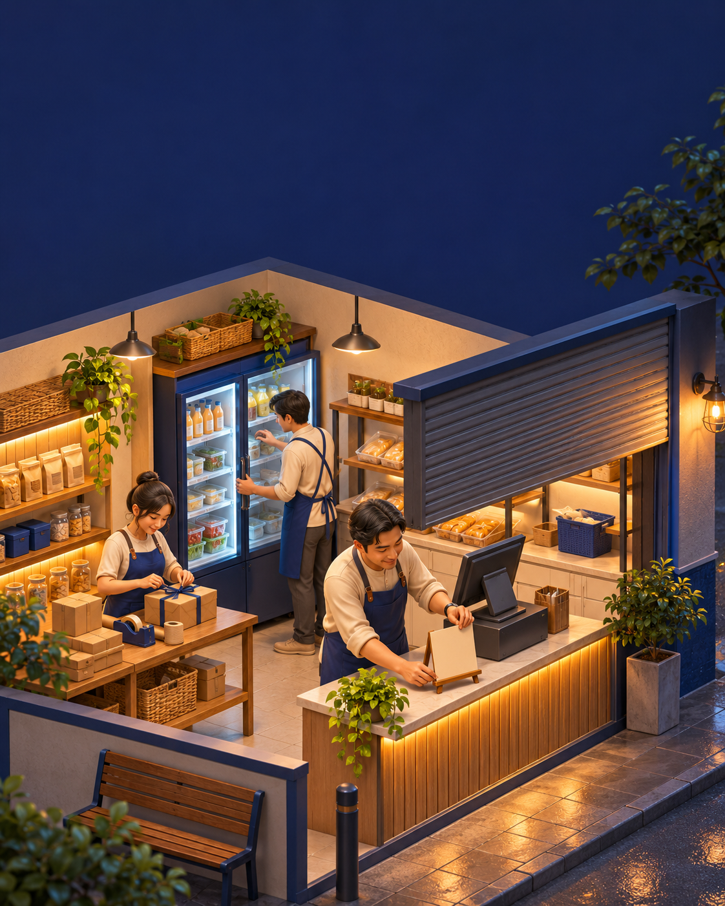
02 / 04Periksa barang yang ditinggal, pesanan yang belum selesai, dan catatan kas hari ini.
Amankan bahan sesuai kebutuhan
Catat pesanan berjalan
Cocokkan dan tutup kasir
03 / 04Apa yang perlu dicek dulu? Pesanan mana yang masih berjalan? Tulis saat detailnya masih segar.
04 / 04Gunakan catatan stok serta tutup kasir Loka Kasir untuk merapikan akhir hari.
Tutup dengan pegangan yang jelas.
 01 / 04
01 / 04Untuk yang merayakan, dari Loka Kasir.
02 / 04Ada juga yang masih melayani pelanggan, menyiapkan pesanan, atau menunggu giliran istirahat.
03 / 04Terima kasih untuk kerja yang tetap berjalan hari ini. Semoga ada ruang untuk beristirahat dan menikmati kebersamaan.
04 / 04Kirim ucapan baik untuk tim dan pelangganmu.
01 / 05Kepastian bisa disampaikan dengan tenang.
 02 / 05
02 / 05Maaf, menu itu sudah habis. Yang masih tersedia ini, harganya sekian. Mau kami bantu pilih?
Yang paling mirip yang mana?
Ilustrasi percakapan sehari-hari.
03 / 05Sampaikan yang tersedia dengan harga jelas. Beri pelanggan ruang memutuskan tanpa janji yang belum pasti.
04 / 05Sebutkan kondisi sebenarnya
Tawarkan pilihan yang tersedia
Konfirmasi keputusan pelanggan
Pilih yang sesuai dengan kondisi tokomu.
05 / 05Cek ketersediaan produk di Loka Kasir sebelum menawarkan pengganti.
Latih saat briefing tim.
 01 / 04
01 / 04Kondisi barang perlu ikut diperiksa.
02 / 04Jumlah tercatat bisa sama, tapi kondisi bahan dan barang tetap perlu dicek setelah ditinggal.
Periksa kondisi penyimpanan
Hitung barang yang perlu dicek
Catat penyesuaian beserta alasan
03 / 04Tulis penyesuaian dan alasannya supaya jumlah berikutnya punya dasar yang jelas.
04 / 04Stok opname Loka Kasir membantu merapikan jumlah berdasarkan hasil pemeriksaan.
Mulai dari bahan yang perlu perhatian.
01 / 05Tambahan harus relevan dan disetujui.
 02 / 05
02 / 05Ada camilan yang cocok, harganya Rp10 ribu. Mau sekalian?
Kopinya saja dulu.
Siap, Kak.
Ilustrasi percakapan sehari-hari.
03 / 05Masukkan tambahan setelah pelanggan setuju. Belanja yang nyaman memberi ruang untuk menjawab “nggak dulu”.
04 / 05Pilih pelengkap yang sesuai
Sebutkan harganya
Konfirmasi sebelum menambah
Pilih yang sesuai dengan kondisi tokomu.
05 / 05Keranjang Loka Kasir membantu memastikan tambahan hanya masuk setelah disetujui.
Pilih pelengkap yang memang cocok.
01 / 06Kapasitas juga soal waktu penyerahan.
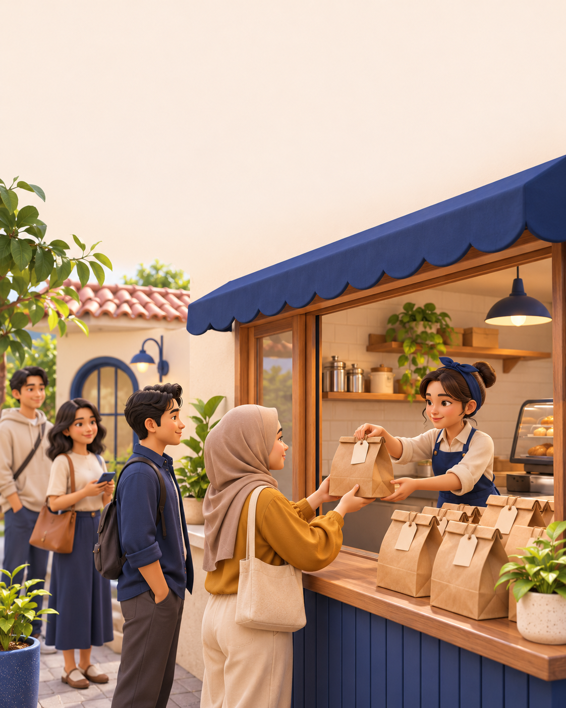
02 / 06Satu pesanan butuh 3 menit untuk dicek dan diserahkan. Satu petugas melayani 10 pesanan berurutan.
03 / 06Simulasi serah terima berurutan oleh satu petugas. Waktu menyiapkan produk belum termasuk.
04 / 0610 × 3 menit = 30 menit. Persiapan produk belum termasuk. Sepakati rentang ambil atau pembagian tugas sesuai kondisi.
05 / 06Kelompokkan waktu ambil
Hitung kapasitas tiap rentang
Konfirmasi jadwal ke pemesan
Pilih yang sesuai dengan kondisi tokomu.
06 / 06Catat produk pre-order di Loka Kasir sebagai rujukan pesanan yang harus disiapkan.
Atur waktu sebelum menerima semua.
 01 / 05
01 / 05Coba pilih langkah yang bisa ditelusuri.
02 / 0503 / 05Kembalian, kas keluar, atau metode bayar keliru bisa jadi penyebab. Cari jejak transaksi sebelum menyimpulkan.
04 / 05Hitung ulang uang fisik
Tinjau kas masuk dan keluar
Cocokkan metode pembayaran
Pilih yang sesuai dengan kondisi tokomu.
05 / 05Tutup kasir dan riwayat transaksi Loka Kasir membantu proses penelusuran.
Bawa catatan saat mengecek.
01 / 05Jumlah terjual baru satu bagian cerita.
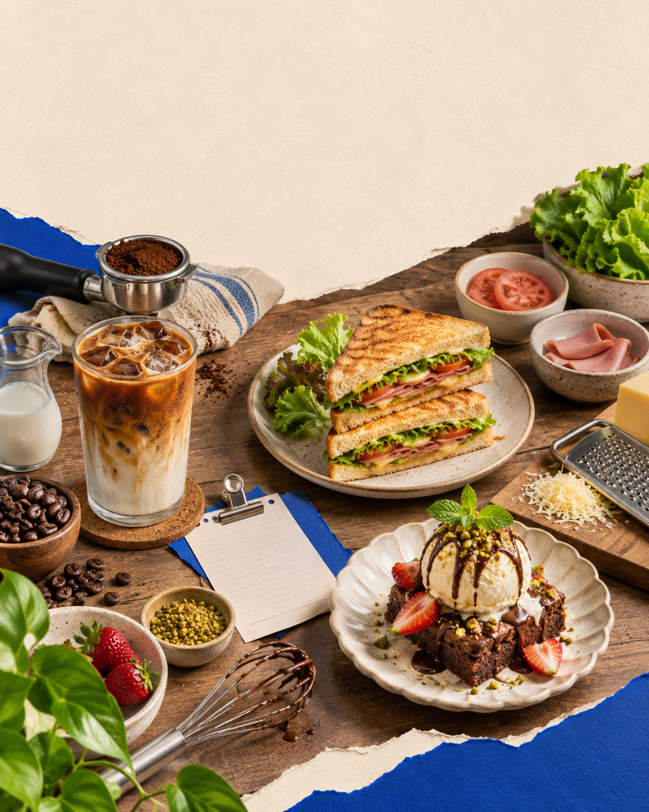
02 / 05Permintaan: berapa yang benar-benar dibeli.
Operasional: biaya, bahan, dan waktu menyiapkan.
03 / 05Produk yang ramai perlu bisa dilayani dengan biaya serta kapasitas yang masuk akal untuk tokomu.
04 / 05Lihat produk paling terjual
Tinjau biaya produknya
Cek kebutuhan operasional
Pilih yang sesuai dengan kondisi tokomu.
05 / 05Laporan produk Loka Kasir membantu memulai evaluasi portofolio usahamu.
Bandingkan beberapa produk utama.
 01 / 04
01 / 04Dengar jawabannya langsung.
02 / 04Pesanan diingat. Respons jelas. Masalah diselesaikan. Kita belum tahu mana yang paling berarti buat pelanggan itu.
03 / 04“Apa yang bikin Kakak nyaman belanja di sini?” Jawabannya bisa membantu memilih layanan yang perlu dijaga.
04 / 04Apa komentar pelanggan yang paling kamu ingat tahun ini?
01 / 05Tindakan tiap barang bisa berbeda.
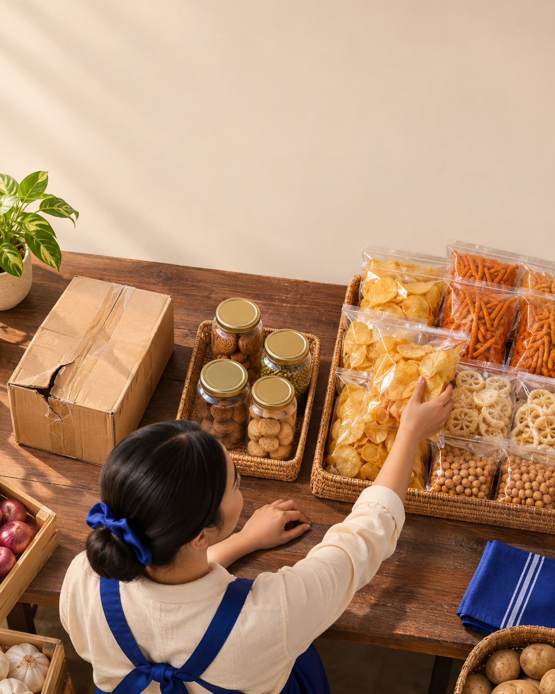
02 / 05Barang yang tersisa punya kondisi, umur simpan, dan laju jual yang berbeda.
03 / 05Mana yang masih bergerak, perlu diperiksa, atau perlu tindakan lain? Lihat keadaan fisik bersama catatannya.
04 / 05Periksa kondisi fisik
Kelompokkan berdasarkan pergerakan
Tentukan tindakan tiap kelompok
Pilih yang sesuai dengan kondisi tokomu.
05 / 05Catatan stok dan penjualan Loka Kasir membantu membaca barang yang perlu perhatian.
Pilih tindakan per kelompok.
01 / 05Tagihan perlu jumlah dan riwayat yang jelas.
 02 / 05
02 / 05Kami cocokkan sisa tagihannya, ya. Ini transaksi dan pembayaran yang tercatat.
Saya cek bukti pembayaran sebelumnya.
Ilustrasi percakapan sehari-hari.
03 / 05Konfirmasi transaksi, pembayaran, dan sisa yang disepakati. Jangan mengandalkan ingatan salah satu pihak.
04 / 05Periksa catatan tagihan
Cocokkan pembayaran sebelumnya
Konfirmasi sisa yang disepakati
Pilih yang sesuai dengan kondisi tokomu.
05 / 05Catatan utang dan piutang Loka Kasir membantu menelusuri transaksi yang belum selesai.
Rapikan sebelum masuk tahun baru.
01 / 04Hal kecil sering baru terasa saat habis.
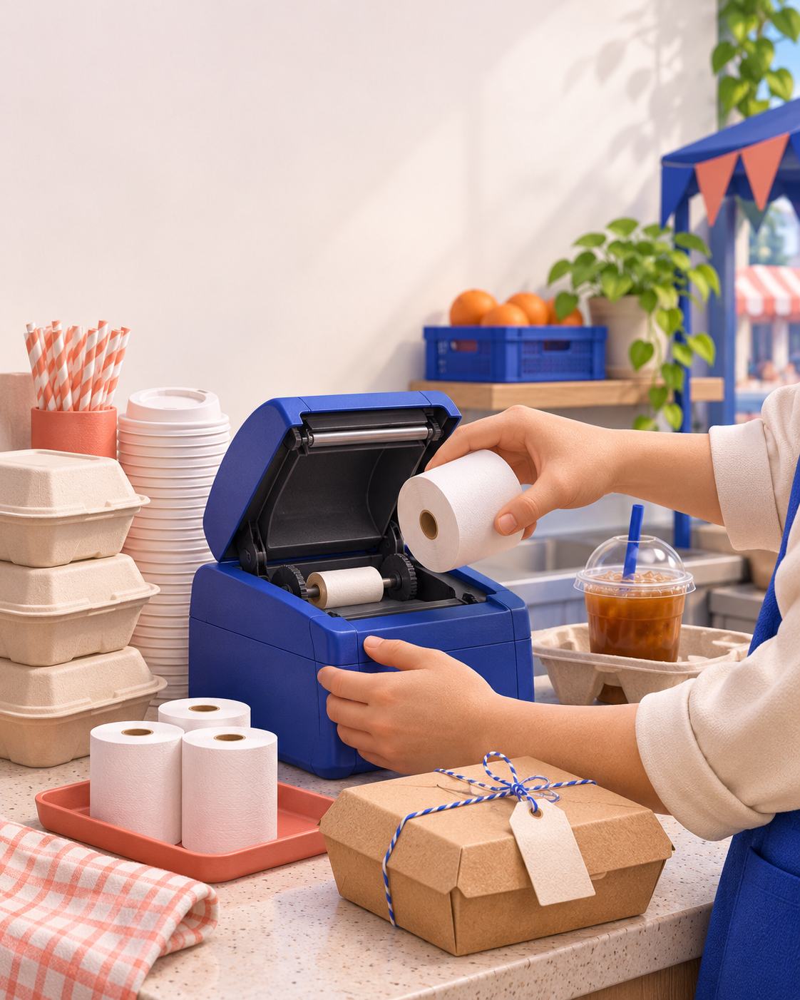
02 / 04Perlengkapan kasir, kemasan, pilihan ekstra, dan pesanan besok perlu siap dibaca tim.
Cek perlengkapan kasir
Siapkan kemasan sesuai pesanan
Briefing peran tim
03 / 04Sisa waktu malam ini bisa dipakai merapikan detail yang berpotensi menghambat layanan besok.
04 / 04Periksa katalog, stok, dan pesanan di Loka Kasir sebelum toko tutup.
Buka checklist bareng tim.
01 / 05Mulai dari yang bisa dijalankan besok.
 02 / 0503 / 05
02 / 0503 / 05Misalnya catat kas keluar saat terjadi atau cek stok sebelum pesan. Tentukan kapan dan siapa yang menjalankan.
04 / 05Pilih satu kebiasaan
Tentukan waktu menjalankan
Evaluasi setelah beberapa pekan
Pilih yang sesuai dengan kondisi tokomu.
05 / 05Loka Kasir bisa jadi tempat menyimpan catatan rutin usahamu.
Pilih satu yang paling membantu.
01 / 04Pastikan prioritas sebelum jam ramai.
 02 / 04
02 / 04Pesanan hari ini, stok utama, waktu ambil, dan pembagian tugas perlu terlihat oleh tim.
Tinjau pesanan hari ini
Cek barang dan perlengkapan
Konfirmasi waktu ke pelanggan
03 / 04Kalau sudah penuh, jelaskan pilihan waktu yang masih bisa dipenuhi. Pegang janji yang sudah diterima.
04 / 04Gunakan catatan pesanan dan transaksi Loka Kasir untuk membantu koordinasi tim.
Samakan pegangan tim hari ini.
 01 / 04
01 / 04Terima kasih sudah menjalani 2026.
02 / 04Bangun lebih pagi. Beresin yang salah. Belajar hal baru. Tetap melayani saat tenaga tinggal sedikit.
03 / 04Terima kasih untuk kamu dan orang-orang yang ikut membantu. Semoga tahun depan ada ruang tumbuh, juga waktu beristirahat.
04 / 04Ceritakan satu hal yang paling kamu syukuri tahun ini.